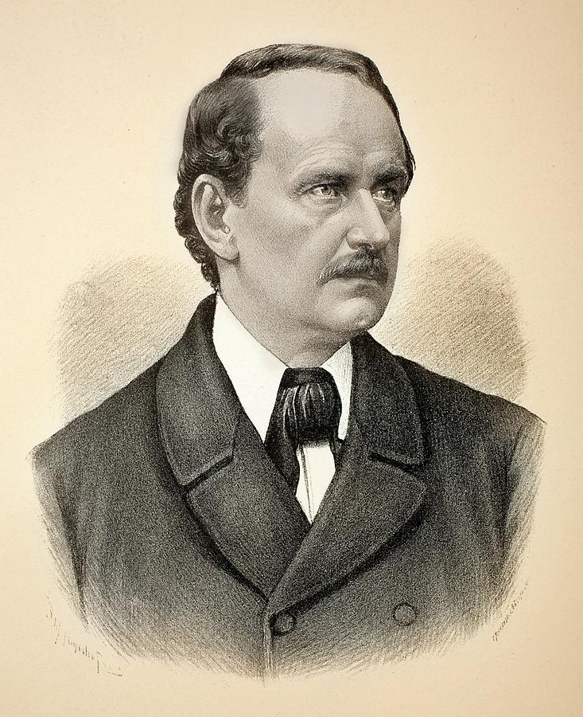
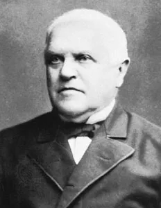
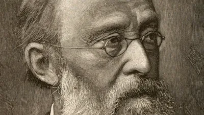
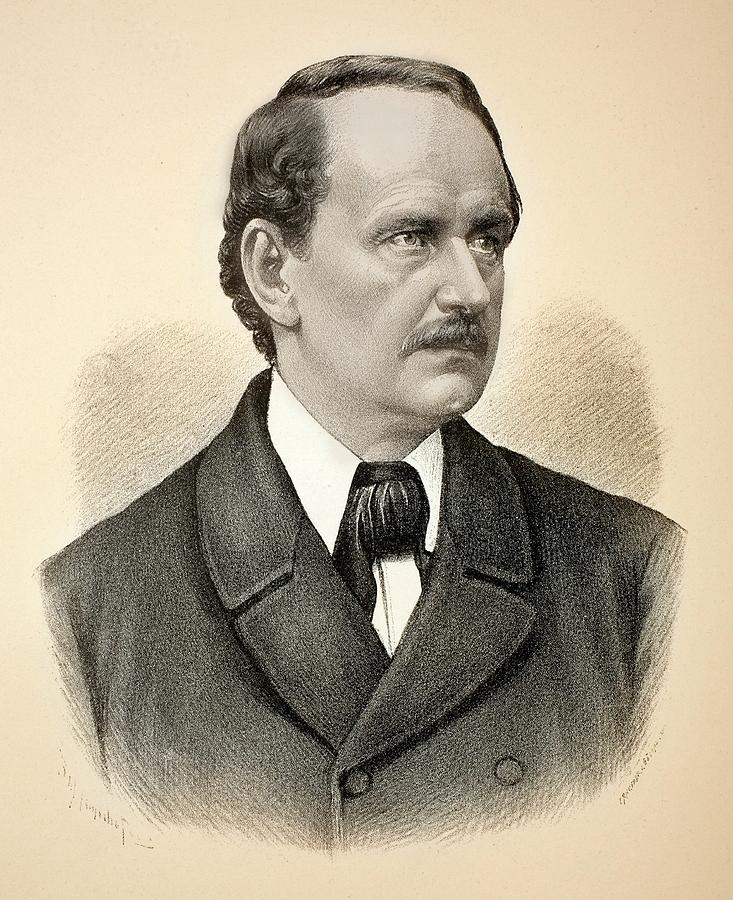
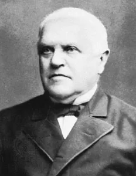
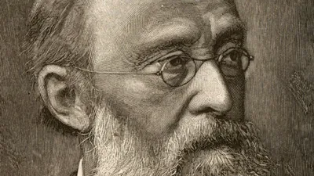

Teoría Celular
La teoría celular es uno de los pilares fundamentales de la biología. Esta teoría establece que todos los organismos vivos están compuestos por células, que la célula es la unidad básica de estructura y función de los seres vivos, y que todas las células provienen de otras células preexistentes. Gracias a esta teoría, se comprende que las funciones vitales ocurren dentro de las células y que toda la información genética pasa de una célula a otra.
Línea de tiempo
Robert Hooke
Observa células por primera vez al examinar un corcho con su microscopio y acuña el término “célula”.
Antoine van Leeuwenhoek
Observa organismos unicelulares en agua estancada con un microscopio más avanzado.
Matthias Schleiden
Afirma que todas las plantas están formadas por células.
Theodor Schwann
Extiende la teoría celular a los animales, afirmando que todos los organismos están formados por células.
Rudolf Virchow
Enuncia el postulado: “toda célula proviene de otra célula”, completando los tres postulados de la teoría celular.
 





Postulados de la Teoría Celular
- Unidad estructural: Todos los seres vivos están formados por una o más células.
- Unidad funcional: La célula es la unidad más pequeña que realiza todas las funciones vitales.
- Unidad de origen: Todas las células se originan a partir de células preexistentes mediante división celular.
Tipos de Células
Las células son las unidades fundamentales de la vida, pero no todas son iguales. Existen dos tipos principales: las procariotas y las eucariotas. Cada una presenta características estructurales y funcionales distintas.
Células Procariotas
- No tienen núcleo definido
- Material genético libre en el citoplasma
- Menor tamaño y estructura más simple
- Ejemplos: bacterias y arqueas
Células Eucariotas
- Tienen núcleo definido
- ADN contenido en el núcleo
- Mayor tamaño y complejidad
- Ejemplos: células animales, vegetales y fúngicas
Comparación rápida
| Característica | Procariota | Eucariota |
|---|---|---|
| Núcleo | No definido | Sí definido |
| Tamaño | Pequeñas | Grandes |
| Organización | Simple | Compleja |
| Ejemplos | Bacterias | Células animales, vegetales |
Evolución del Microscopio
Microscopios simples (Hooke y Leeuwenhoek).
Observa organismos unicelulares en agua estancada con un microscopio más avanzado.
Se crea el microscopio electrónico, capaz de observar estructuras internas con gran detalle.
Microscopía de fluorescencia, confocal y de superresolución permiten observar dinámicas celulares en tiempo real.